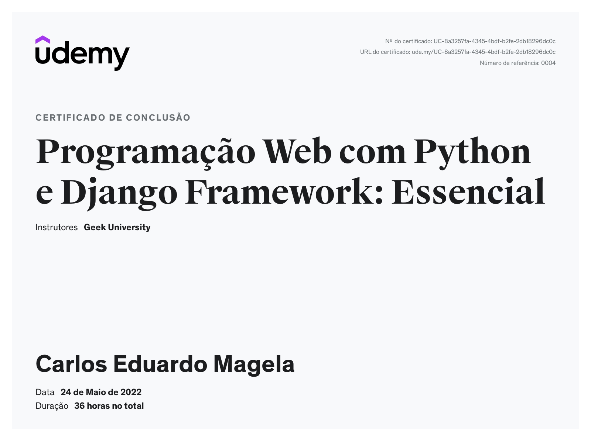
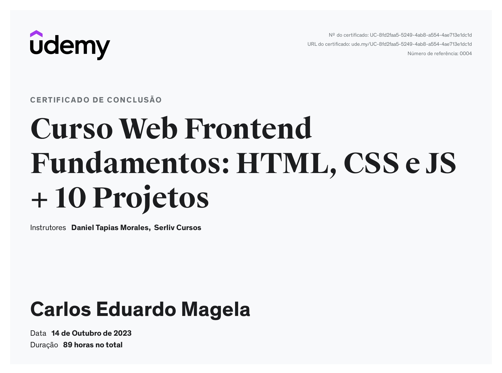

Formação
Superior incompleto, em análise e desenvolvimento de sistemas- Faculdade Anhanguera- campus Osasco-sp
Ensino médio- EEPSG ALDEIA DE BARUERI
Experiência profissional
Atualmente motorista de aplicativo de transporte de passageiros.
Agente de trânsito, no municipio de Barueri
Periodo: 02/2013 a 12/2015
Conhecimentos na área
| HTML | CSS | JavaScript | Python | .ASP NET CORE |
| MySql | Django | .Net | C# | Montagem de comuputadores |
Python

Django
JavaScript
Web front-end.
Habilidades
Capacidade intuitiva, raciocinio lógico, facil aprendizagem, responsabilidade , comunicativo.
Acredito que a médio prazo serei um ótimo desenvolvedor de sistemas, pois acredito que quando se faz o que gosta a, chance de se destacar no mercado é muito maior do que, aquele que faz o que aprendeu mas, que não tem a vontade de melhorar , pois faz por dinheiro ou outro motivo.